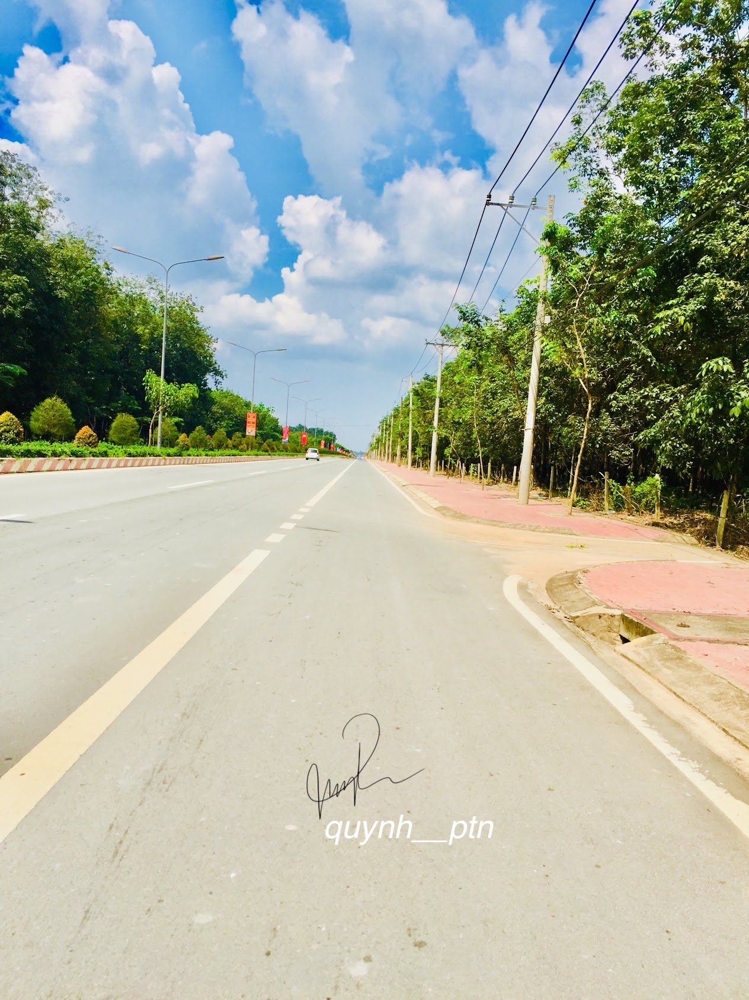
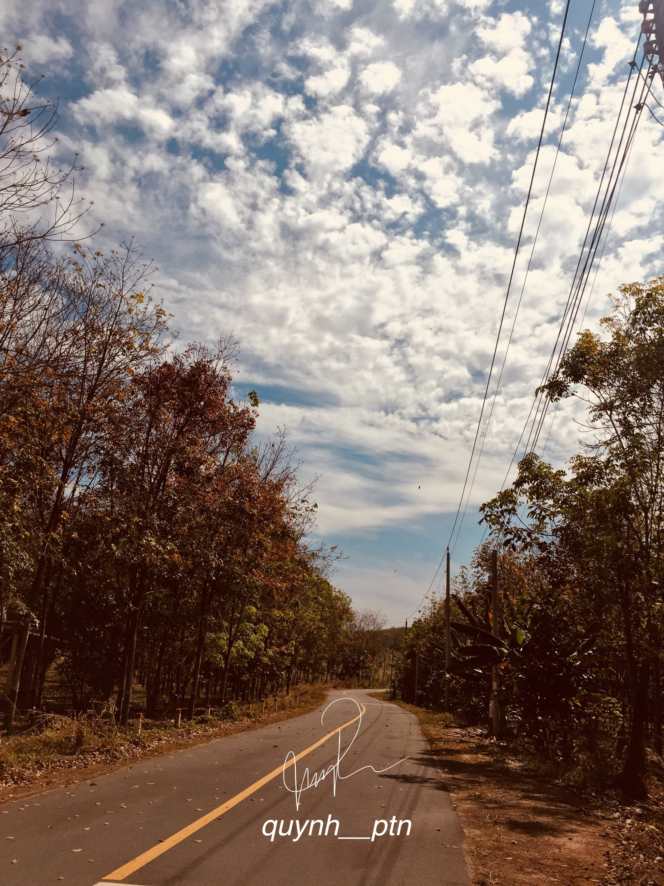
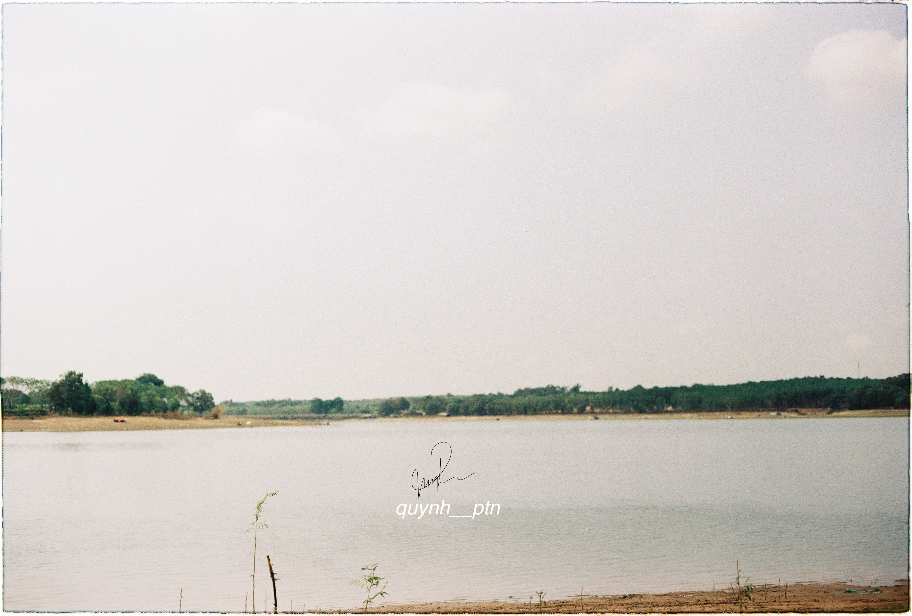
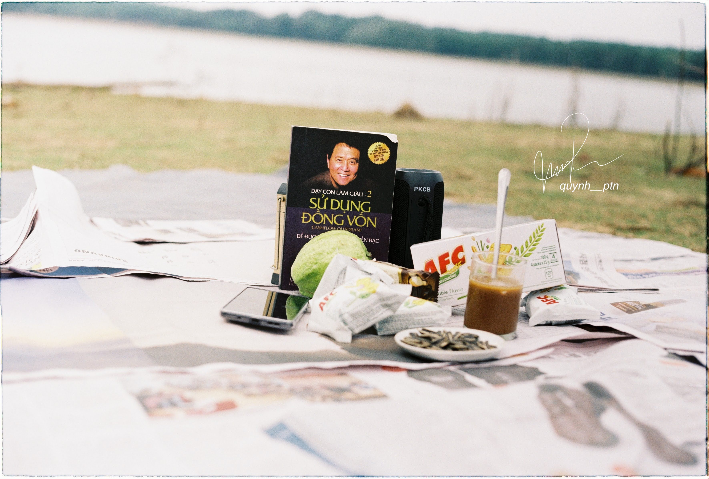

#lifestyle #travel #volunteer #knowledgesharing
MỘT SÁNG CHỦ NHẬT THỨ BA CỦA THÁNG BA
Hồ Đá Bàn, Bắc Tân Uyên, Bình Dương
21/03/2021
Tuy nhà tôi ở Bình Dương, nhưng tôi sống và làm việc tại TPHCM. Nơi của sự nhộn nhịp, ồn ào nhưng cũng thú vị. Cho tôi bạn bè, công việc, sự trưởng thành, độc lập và hiểu biết. Nơi tôi sống trước đây là một vùng quê thanh bình và rất nhiều cây cao su. Nhưng bây giờ do sự phát triển của thời đại nên đường xá được mở rộng và nhiều người đến đây để lập nghiệp. Vì khoảng cách từ TPHCM - Bình Dương không quá xa, nên thi thoảng tôi vẫn lái xe máy về nhà.
Sau giờ làm việc ngày thứ 7, tôi phi thẳng về nhà với dự định đi thả diều, với cái thời tiết này thì thả diều là một hoạt động khá thú vị.
Bài viết khác: Học cách nắm lấy sự ngẫu nhiên Đường huyện tôi hai bên là hàng cao su, nhưng đi buổi trưa vẫn khá nắng.
Đường về nhà tôi, hình này chụp lúc gần tết, lúc cao su thay lá nên có màu vàng rất đẹp.
Nhưng dự định chỉ là dự định, vì về buổi trưa nên tôi khá mệt và phải đổi qua phương án "Đi chụp ảnh tại Hồ Đá Bàn vào sáng chủ nhật thứ ba của tháng ba"
Hồ Đá Bàn là một hồ nước ngọt tự nhiên nằm ở xã Đất Cuốc, huyện Bắc Tân Uyên, tỉnh Bình Dương. Hồ nằm cách nhà tôi không đến 1km. Đây tuy không phải là một địa danh du lịch nổi tiếng, nhưng nếu cần một nơi không quá xa Sài Gòn ồn ã để ngắm cảnh bình minh, chụp ảnh hay câu cá giải trí thư giãn, thì hồ Đá Bàn là một lựa chọn không hề tệ.

Đứng tại đây có thể nhìn thấy được trung tâm hành chính của huyện.
Sáng chủ nhật, tôi cùng cô bạn dậy thật sớm để đi tập thể dục, nhân tiện ra nghía Hồ chọn địa điểm làm bộ hình nhân ngày tôi được đủ điều kiện ra trường hehe. Vì tính tình khá "điệu đà" nên hai đứa phải bày vẽ đủ thứ mãi mới chụp được những tấm hình ưng ý.
Trời buổi sáng khá là mát mẻ và trong lành.
Sau một hồi hì hục chuẩn bị mọi thứ thì đây là những tấm hình của chúng tôi:

Ngồi bên hồ nhâm nhi ly cà phê buổi sáng. Từ bao giờ tôi lại thích uống cà phê phin, thật sự hương vị nó rất đậm đà và có mùi thơm rất thích.

Hạt hướng dương từ đợt ...... cũng được tôi đem theo để làm bối cảnh chụp
Đem sách theo nhưng không có đọc...

Đây là tôi khi quá mệt mỏi với mọi thứ .... nên bấm điện thoại cho đỡ mệt.
* Ảnh được chụp bằng Iphone 11 và Máy ảnh film Canon FT - QL